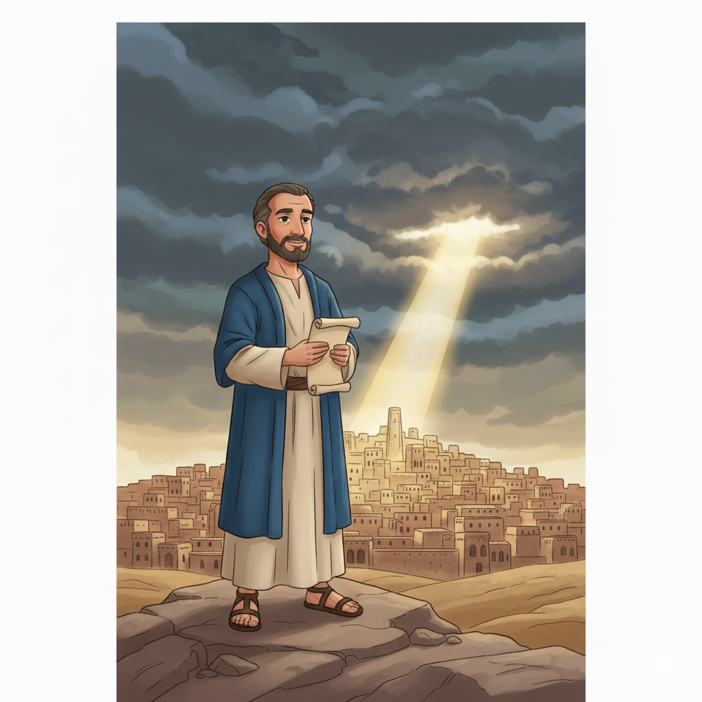
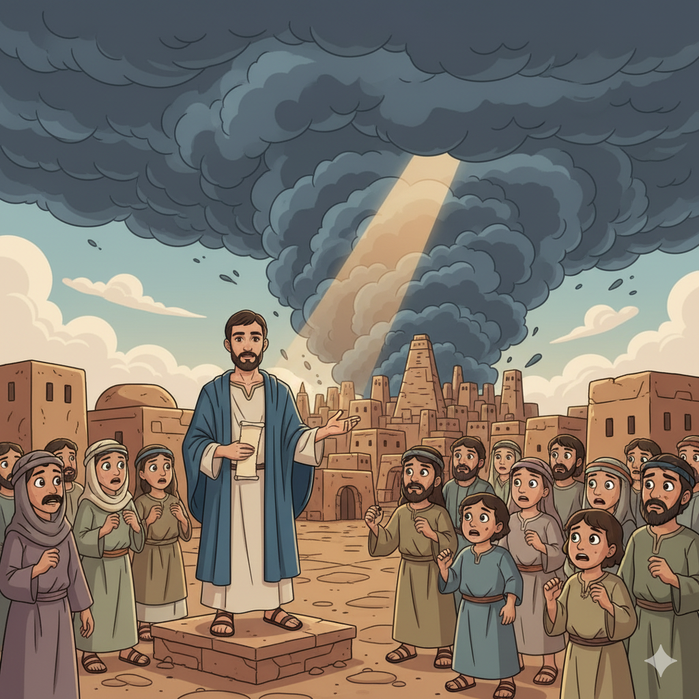
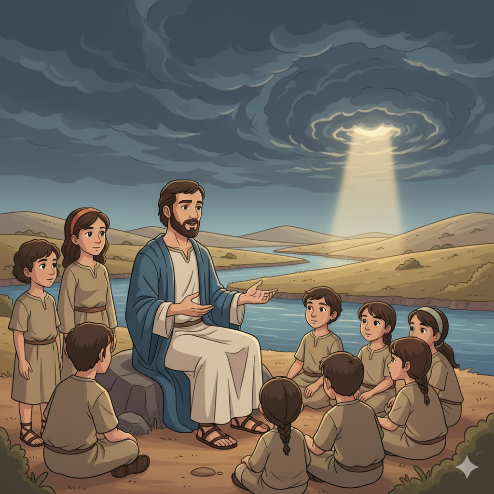

O Consolo para Israel e o Fim de Nínive — Um Resumo Visual para Crianças
Nínive se arrependeu com Jonas — foi salva!
Mas 150 anos depois, voltou ao mal que a envolvia.
Deus esperou, esperou — com paciência infinita,
Mas chegou a hora: a conta foi cobrada, com pressa e com pressa!
A paciência de Deus não é fraqueza nem esquecimento —
É amor que espera a mudança; mas o juízo vem no momento!
📖 Naum 1:3 — "O Senhor é tardio em irar-se, mas grande em poder, e não inocentará o culpado."
No mesmo livro de guerra e ruína e destruição,
Brilha um versículo de paz e consolação:
"O Senhor é bom, fortaleza no dia da angústia,
Conhece os que nEle confiam — essa é a sua justiça!"
Naum foi escrito como consolo para um povo oprimido —
O mesmo livro que condena o opressor protege o sofrido!
📖 Naum 1:7 — "O Senhor é bom, uma força na hora da angústia, e conhece os que nEle se refugiam."
"Que lindos são os pés sobre os montes!" Naum clamou,
O mensageiro que anuncia a paz — que alívio que causou!
Isaías repetiu essa imagem no capítulo cinquenta e dois,
E Paulo a usou para falar de quem prega o evangelho de Jesus!
A boa notícia que Naum anunciava — Nínive caiu, Israel livre! —
Aponta para a maior boa nova: Cristo ressuscitou e vive!
📖 Naum 1:15 — "Eis que sobre os montes os pés do que anuncia boas novas." (Ecoado em Isaías 52:7 e Romanos 10:15!)
🏰
"O Senhor é bom, uma força na hora da angústia, e conhece os que nEle se refugiam."
Naum 1:7
No meio de um livro sobre julgamento e destruição, esse versículo brilha como uma joia. Naum não foi escrito para aterrorizar — foi escrito para consolar um povo oprimido. O mesmo Deus que julga o opressor é refúgio para o oprimido!
O nome Naum significa "consolação" ou "conforto" — paradoxalmente, ele conforta o povo de Deus anunciando a destruição do opressor! Era de Elcós, localidade desconhecida. Profetizou entre 663 a.C. (queda de Tebas) e 612 a.C. (queda de Nínive).
📖 Leia na Bíblia — Naum 1:1
"Profecia acerca de Nínive. Livro da visão de Naum, o elcosita."
Nínive era a capital da Assíria, o império mais brutal da história antiga. Os assírios empalhavam prisioneiros em estacas, arrancavam pele de vivos e deportavam povos inteiros. Eles haviam destruído o Reino do Norte de Israel (722 a.C.) e aterrorizavam toda a região. 150 anos antes, Jonas pregou e eles se arrependeram — mas voltaram ao mal.
📖 Leia na Bíblia — Naum 3:1
"Ai da cidade sanguinária, toda cheia de mentira e rapina, sem cessar a presa!"
Judá vivia sob a sombra aterrorizante da Assíria. Já tinha visto o reino irmão (Israel do Norte) ser destruído. Pagava tributos pesados e vivia com medo constante. Naum foi a mensagem de alívio: o opressor será derrubado — Deus não esqueceu Seu povo!
📖 Leia na Bíblia — Naum 1:15
"Celebra as tuas festas, ó Judá, cumpre os teus votos; porque o perverso não passará mais por ti."

📖 Leia em casa!
Naum tem 3 capítulos. Cap. 1 apresenta o caráter de Deus (justo e protetor); caps. 2–3 descrevem a queda de Nínive em linguagem épica e poética!
⚖️ Cap. 1: Quem é o Deus que Julga?
Naum começa revelando o caráter de Deus: tardio em irar-se, mas grande em poder — e que não inocentará o culpado. O mesmo capítulo traz o versículo-joia (1:7): "O Senhor é bom, uma força na hora da angústia." Deus é simultaneamente juiz e refúgio — para pessoas diferentes!
📖 Naum 1:3 — "O Senhor é tardio em irar-se, mas grande em poder, e não inocentará o culpado."
🏙️ Cap. 2: O Cerco e a Queda de Nínive
Uma das cenas de batalha mais vívidas da Bíblia! Naum descreve o ataque como uma câmera filmando ao vivo — cavaleiros, carruagens, rios transbordando, portas das cidades abertas, o palácio cedendo. Cada detalhe se cumpriu em 612 a.C., quando babilônios e medos destruíram Nínive.
📖 Naum 2:6 — "As portas dos rios se abrem, e o palácio se dissolve."
💀 Cap. 3: Por Que Nínive Merece o Julgamento?
Naum lista os crimes de Nínive: cidade sanguinária, cheia de mentiras, comércio de escravos, feitiçaria, crueldade sem fim. Compara a queda de Nínive com a de Tebas (No-Ámon), que a própria Assíria havia destruído em 663 a.C. Quem vive pela espada, pela espada perece!
📖 Naum 3:7 — "Quem terá pena de ti? De onde buscarei consoladores para ti?"
Naum é uma mensagem de consolo para quem sofre sob o poder do mal. Ele diz: Deus viu. Deus vai agir. O opressor não ficará impune. Isso dava esperança real a um povo que vivia com medo da Assíria!
📖 Naum 1:7
"O Senhor é bom, uma força na hora da angústia, e conhece os que nEle se refugiam."
Entre Jonas e Naum passaram cerca de 150 anos. Deus esperou — deu tempo para Nínive mudar. Mas quando o arrependimento não foi real e duradouro, o julgamento veio. A paciência de Deus não é indiferença — é misericórdia com prazo!
📖 Naum 1:3
"O Senhor é tardio em irar-se, mas grande em poder, e não inocentará o culpado."
Naum 1:15 — "os pés do que anuncia boas novas" — foi ecoado por Isaías 52:7 e por Paulo em Romanos 10:15, ao falar sobre os pregadores do evangelho de Jesus. O alívio de Naum (Nínive caiu!) aponta para o alívio maior: o pecado foi vencido na cruz!

O nome Naum = consolação. O propósito central do livro é dar esperança a Judá: o terror assírio tem data de validade! Deus não esqueceu Seu povo. O opressor que parece invencível não é eterno — e Deus é mais forte.
📖 Naum 1:15
"Celebra as tuas festas, ó Judá, cumpre os teus votos; porque o perverso não passará mais por ti."
Naum é o livro que responde ao sofrimento dizendo: nenhum império do mal dura para sempre. A Assíria parecia invencível por séculos. Em 612 a.C. desapareceu tão completamente que foi "perdida" por 2.400 anos — até ser redescoberta por arqueólogos no século XIX!
📖 Naum 3:19
"Não há cura para a tua ferida; a tua chaga é maligna."
🌟 Lição Principal: Deus é simultaneamente Juiz e Refúgio. Para quem pratica o mal e não se arrepende, Ele é juiz implacável. Para quem sofre e confia, Ele é fortaleza segura. O mesmo Deus — duas experiências completamente diferentes!
🏺 Nínive foi "perdida" por 2.400 anos: Nínive foi destruída tão completamente em 612 a.C. que desapareceu da história. Por séculos, estudiosos achavam que era uma lenda bíblica. Só em 1845 o arqueólogo inglês Austen Henry Layard escavou o monte Kuyunjik, no atual Iraque, e encontrou os palácios de Nínive — exatamente como Naum havia descrito!
🐟 A sequência de Jonas: Jonas pregou em Nínive e eles se arrependeram — por volta de 760 a.C. Naum profetizou a destruição de Nínive — por volta de 650 a.C. E em 612 a.C. aconteceu. Naum e Jonas são os únicos dois livros proféticos que falam diretamente sobre Nínive!
👣 "Pés que trazem boas novas" — 3 vezes na Bíblia: A imagem de Naum 1:15 aparece também em Isaías 52:7 ("quão formosos são os pés do que anuncia boas novas") e em Romanos 10:15, onde Paulo a usa para descrever os pregadores do evangelho de Jesus. Uma imagem de 2.700 anos que ainda descreve quem anuncia Cristo!
Naum 1:15 — "os pés do que anuncia boas novas" — é ecoado em Isaías 52:7 e citado por Paulo em Romanos 10:15 para descrever os pregadores do evangelho. O "consolo" que Naum anunciava (Nínive caiu!) aponta para o consolo definitivo: Jesus venceu o pecado e a morte!
Naum 1:7 — "O Senhor é bom, um refúgio na hora da angústia" — é o mesmo Deus que Jesus revelou: "Vinde a mim todos os que estais cansados e sobrecarregados, e eu vos darei descanso" (Mt 11:28). O refúgio de Naum tem nome: Jesus!
O contraste Jonas × Naum mostra a misericórdia e a justiça de Deus em equilíbrio — exatamente o que a cruz de Jesus revela: Deus é ao mesmo tempo justo (o pecado é punido) e misericordioso (Jesus pagou em nosso lugar)!
Paulo usa Naum para falar do evangelho
"Como também está escrito: Quão formosos os pés dos que anunciam o evangelho de paz, dos que anunciam boas novas de coisas boas!"
📖 Romanos 10:15 (citando Naum 1:15 e Isaías 52:7)
Paulo usou a imagem de Naum — o mensageiro que corre com a notícia da vitória — para descrever quem leva o evangelho de Jesus ao mundo. Você também pode ser esse mensageiro!
Converse com sua família, turma ou professor sobre essas perguntas!
⏳
Nínive se arrependeu com Jonas mas voltou ao mal. O arrependimento verdadeiro precisa durar. Você já pediu perdão por algo mas voltou a fazer depois? O que tornaria o arrependimento mais real e duradouro?
🛡️
Naum 1:7 diz que Deus é refúgio na hora da angústia. Já passou por um momento de medo ou angústia em que você se lembrou de Deus? Como foi? O que significa para você ter Deus como "fortaleza"?
👣
Paulo disse que são formosos os pés de quem anuncia boas novas. Você já compartilhou uma boa notícia sobre Deus com alguém? Como foi? Quem na sua vida precisa ouvir uma boa notícia?
Escolha um desafio (ou faça os três!) e seja um explorador da Bíblia!
🛡️
Quando sentir medo, angústia ou pressão esta semana, pare e repita em voz alta: "O Senhor é bom, uma força na hora da angústia." Deixe essa verdade entrar no coração antes de agir.
👣
Esta semana, compartilhe uma boa notícia sobre Deus com uma pessoa — um versículo, um testemunho, uma história. Naum anunciou o fim do terror; você pode anunciar o início da esperança!
📖
São dois livros curtos sobre a mesma cidade! Leia Jonas (4 caps.) e Naum (3 caps.) em sequência. Depois pense: como a misericórdia de Deus (Jonas) e a justiça de Deus (Naum) se completam?
Trilho Kids | Desenvolvido com ❤️ para crianças © 2025